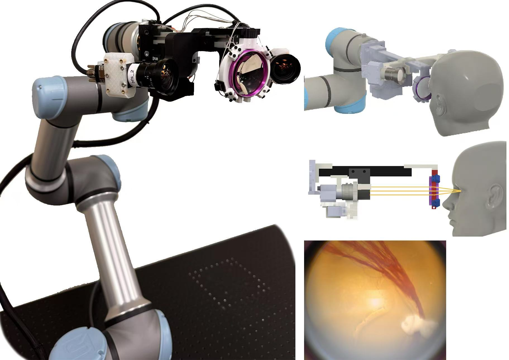
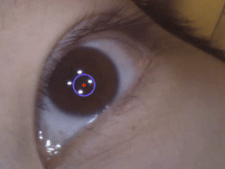

|
Wenzhou Ding I am a first year M.S. student in Computer Science at the University of Illinois Urbana-Champaign, advised by Prof. Kris Hauser. My current research interests lie in medical robotics. |

|
News[Dec 2025] EYESIGHT (expanded version) accepted to JMRR 2025! [May 2025] Graduated from UIUC and will be continuing with MSCS this fall! [Feb 2025] EYESIGHT accepted to ISMR 2025! |
Publications |
|
|
The EYESIGHT Robotic Eye Examination System for Non-Mydriatic Indirect Retinal Imaging on Unconstrained Individuals |
|  |
EYESIGHT: Eye Examination System with Intelligent Guidance and Human Tracking |
|  |
Multiview 3D Eye Tracking on Off-Axis Images for an Automated Eye Examination System |

|
UnityEyes 2: Open Source Robust Synthetic Eye Generation for Camera-Based Eye Tracking with Machine Learning |
ActivitiesIllinois Robotics in Space (IRIS) RoboCup@Home |
|
Website template from Jon Barron. |